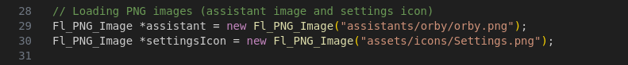
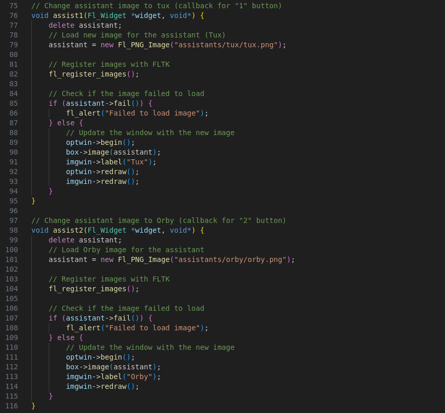
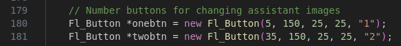
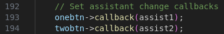

I will show you a great starting point for modifying the software. Custom assistants on of easiest things to do to modify your copy.
Start with a png image of your assistant. (It does need to be PNG) Now that you have your image you navigate from the main tuxy directory to assistants and create a folder with the name of your assistant (it doesn't need to be the name of your image but it is cleaner than a random name) now I assume you put your image inside the directory if you didn't there is no help for you. Now this is where we code.
as you see from the image this is where we load png images. Ignore line 30 I forgot to remove that in v0.0.2, anyway if you want to make your image default you will replace the file path of line 20 with your images file path (eg. "assistants/assistant/assistant.png")
Unlike the last edit you do need to do this if you want a custom assistant. You will either need to change the function assist1 or assist2. Both functions have the same instructions, once again you'll need to replace the file path with your own. And if you want to you and replace the imgwin label with your own.
If you want to keep the two default assistants you will need to copy the assist functions and the buttons to make another option for your assistant.
After copying the functions and buttons you will connect your new button to the new function like the other two buttons.
then after you have finally done each step you will compile with the Makefile and there you have it you have a custom assistant congrats!